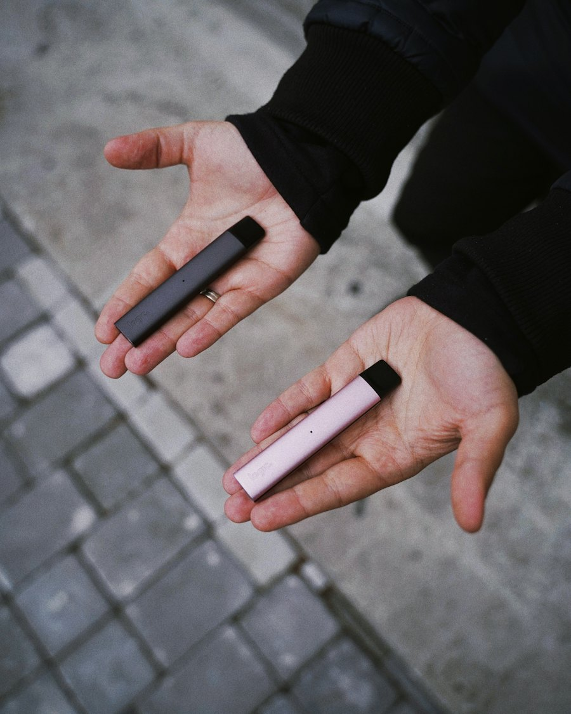
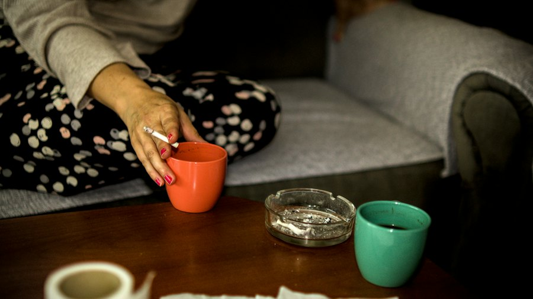
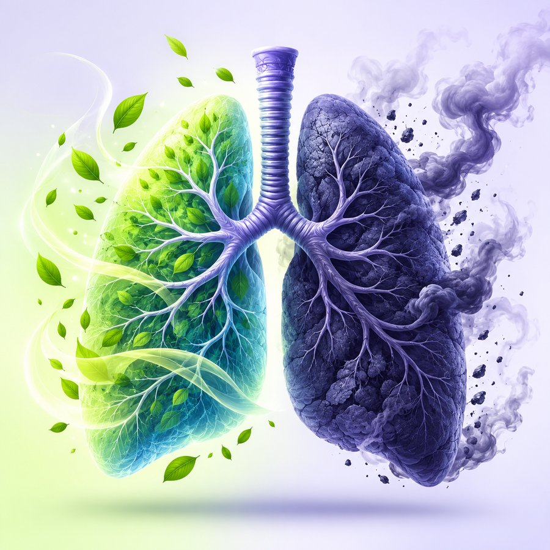
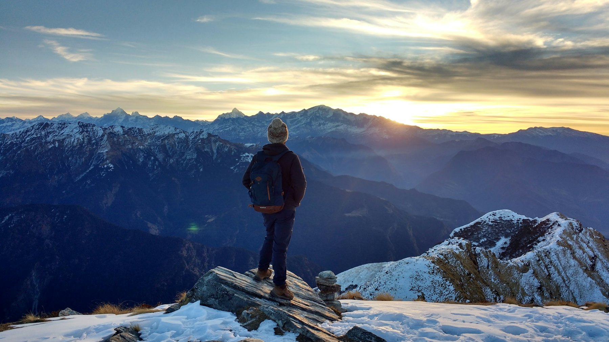

Nikotyna nic Ci nie daje. Kiedy naprawdę to zrozumiesz, rzucenie przestaje być walką. Krótkie lekcje audio, jedno ćwiczenie dziennie i spotkania na żywo prowadzą Cię przez 90 dni. Papierosy, e-papierosy i saszetki.
PapierosyE-papierosySnus i saszetkiAplikacja w telefonieSpotkania na żywoLekcje audio90 dniPłacisz razPapierosyE-papierosySnus i saszetkiAplikacja w telefonieSpotkania na żywoLekcje audio90 dniPłacisz raz
90dni programu krok po kroku
3formy nikotyny: papierosy, e-papierosy, snus
5minut dziennie w aplikacji
49 złpłacisz raz, bez abonamentu
Papierosy, e-papierosy, snus
Palisz, wapujesz czy snusujesz? To ta sama nikotyna
Nieważne, czy sięgasz po paczkę, jednorazówkę czy saszetkę. Głód jest ten sam, więc i wyjście jest to samo. Program jest dla każdej formy nikotyny.
Papierosy
Zwykłe, slimy, skręcane. Każdy kolejny gasi tylko głód po poprzednim.

E-papierosy
Jednorazówki, pody, liquidy. Brak dymu nie oznacza braku nikotyny.
Snus i saszetki
Torebeczka pod wargę: z tytoniem albo „tobacco free”. Nikotyna działa tak samo.
Podgrzewacz tytoniu? Też dobrze trafiłeś.
Zacznij tutaj · lekcja 1 za darmo
Posłuchaj pierwszej lekcji. 2 minuty.
Tak brzmi każdy dzień programu. Dowiesz się, dlaczego rzucanie wydaje się trudne i dlaczego wcale nie musi takie być.
Lekcja 1 z 7
Pułapka
0:002:18
Przez pierwszy tydzień palisz normalnie. Słuchasz i robisz jedno ćwiczenie dziennie.
Dlaczego tak trudno rzucić
Trzy rzeczy trzymają Cię przy nikotynie
Kiedy rzucasz siłą woli, walczysz z nimi i czujesz, że coś tracisz. Kiedy je zrozumiesz, nie ma z czym walczyć.
Nikotyna
Znika z ciała w kilka godzin i zostawia lekkie, puste uczucie. Kolejny papieros, buch czy saszetka je gasi. Ta ulga to nie przyjemność, tylko koniec głodu, który sama zrobiła. Po kilku dniach bez nikotyny ten głód słabnie.

Nawyk
Kawa, telefon, samochód, przerwa w pracy. Głowa połączyła te chwile z nikotyną. To tylko skojarzenia. Kiedy przestajesz wierzyć, że czegoś Ci brakuje, same słabną.
Przekonanie
Najmocniej trzyma wiara, że nikotyna pomaga na stres, nudę i złość. Wbudowały ją filmy, otoczenie i reklama. Kiedy ją rozbroisz, nie ma za czym tęsknić i nie musisz niczego zastępować.
Szybki test · 6 pytań · 30 sekund
Sprawdź, jak bardzo jesteś uzależniony
Test działa w przeglądarce z włączonym JavaScriptem.

Zdrowe płucoPłuco palacza
Zdrowe płuco vs. płuco palacza
Każdy dzień bez nikotyny to czystszy oddech
Dym osiada w płucach latami. Wapowanie też nie jest dla nich obojętne. Dobra wiadomość jest taka, że ciało zaczyna się regenerować od pierwszego dnia, w którym przestajesz.
Papieros, buch czy saszetka niczego Ci nie dają. Kiedy znikają, wraca to, co naprawdę Twoje.
Poranna kawa smakuje kawąBez pośpiechu, bez wychodzenia na mróz i bez zapachu dymu na palcach.
Schody bez zadyszkiWchodzisz na piętro i nie musisz łapać oddechu.
Czas dla bliskichNie wychodzisz „na chwilę”. Jesteś obecny cały czas.
Energia na więcejPieniądze i siły idą na to, co naprawdę lubisz.

Słowo od Tomasza
Nie rzucasz czegoś cennego. Wychodzisz z pułapki, w którą nikt nie chciał wpaść.
Tomasz Świadomość · trener mentalny
Jak to działa
Program 90 dni
Nie rzucasz siłą woli. Najpierw rozumiesz, że nic nie tracisz. Potem jest jeden ostatni papieros i od tej chwili jesteś wolny.
Dni 1 do 7
Zrozumienie
Jedna lekcja audio na 2 do 3 minut i jedno ćwiczenie dziennie. Palisz, wapujesz czy snusujesz normalnie, niczego nie ograniczasz. Krok po kroku widzisz, że nikotyna nic Ci nie daje.
Dzień zero i dni 8 do 28
Wolność od pierwszej chwili
Ostatni papieros, buch albo saszetka i licznik wolności rusza. Codziennie krótka wiadomość. Gdy przyjdzie fala ochoty, wciskasz SOS: krótka medytacja, minuta oddechu i fala mija.
Dni 29 do 90
Bez powrotów
Raz w tygodniu przygotowanie na trudne sytuacje: imprezy, alkohol, stres, wakacje. Wiesz, że nie ma „tylko jednego”.
Opinie
Co mówią moi klienci
Aplikacja
Wszystko masz w telefonie
Bez App Store. Otwierasz link, dodajesz aplikację do ekranu i logujesz się kodem z maila. Kilka minut dziennie.
Etap 1 · Dzień 2 z 7 · palisz normalnie
Mały potwór
Lekcja dnia · 2,5 minJak nikotyna sama wywołuje głód, który potem gasi
Ćwiczenie dniaPrzy jednym papierosie zauważ: przyjemność czy tylko ulga?
Zacznij lekcję
DziśLekcjeLicznikSpotkania
Twój plan
Etap 1 · dni 1 do 77 lekcji: pułapka, mały i duży potwór, złudzenia, z czego rezygnujesz, pułapki, gotowość
Dzień zeroOstatni papieros, buch albo saszetka. Potem jesteś wolny.
Dni 8 do 90Krótkie wiadomości: codziennie, potem raz w tygodniu
DziśLekcjeLicznikSpotkania
SOS · to fala, minie za kilka minut
Zatrzymaj się na minutę
▶ Medytacja SOS · 1:45Głos prowadzi Cię przez falę
Medytacja · 1:45SOS: szybkie przejście przez falę ochoty
Oddech · 1 minSpokój, kwadrat albo podwójny wdech, z kołem i wibracją
DziśLekcjeLicznikSpotkania
Od dnia zero
5 dni wolności
Niezapalone75
Zostało w portfelu75 zł
Najbliższe spotkanieWtorek, 20:00 · Google Meet z Tomaszem
DziśLekcjeLicznikSpotkania
Dziś
Dziś
Lekcja audio na 2 do 3 minut i jedno ćwiczenie.
Lekcje
Cały plan w jednym miejscu. Do każdej lekcji możesz wrócić, gdy pojawi się wątpliwość.
Przycisk SOS
Gdy przychodzi fala ochoty, jeden przycisk włącza krótką medytację i oddech. Na koniec zaznaczasz, co ją wywołało, i widzisz, co Cię najczęściej łapie.
Dwie medytacje i oddech
Prowadzona autohipnoza „Kotwica wolności”, medytacja SOS i trzy ćwiczenia oddechowe po minucie. Możesz z nich korzystać od pierwszego dnia.
Licznik
Dni wolności, niezapalone papierosy i pieniądze, które zostają w kieszeni.
Policz to uczciwie
Ile kosztuje Cię palenie?
Policz, ile wydajesz na papierosy, wkłady albo saszetki w miesiącu i w roku. Dodaj kaszel, zadyszkę na schodach i każde wyjście na mróz w środku rozmowy. Tyle naprawdę kosztuje Cię ten nawyk.
Gdy dalej paliszPo 90 dniach programu
PieniądzePaczka dziennie to około 720 zł miesięcznie, czyli ponad 8 500 zł rocznie. Co roku więcej, bo akcyza rośnie49 zł raz. Przy paczce dziennie program zwraca się po 2 dniach
ZdrowieKaszel rano, zadyszka na schodach, częstsze infekcjePo 2 do 12 tygodniach lepsze krążenie i płuca, po kilku miesiącach mniej kaszlu (dane WHO)
CodziennośćZapach dymu na ubraniach, włosach i w aucie. Wychodzisz z rozmowy, z imprezy, z ciepłego domu na mrózWychodzisz tylko wtedy, kiedy chcesz. Ubrania pachną praniem
GłowaMyśl o następnym papierosie wraca co godzinę. Każda próba rzucenia kończy się „jednym, ostatnim”Wiesz, co uruchamia głód. Na każdą falę masz przycisk SOS, medytację i oddech
CzasKolejne lata prób na samej silnej woliPlan na 90 dni krok po kroku: lekcje audio, wiadomość na każdy dzień, dwie medytacje i spotkania na żywo
Dla porównania: jedna paczka kosztuje dziś około 24 zł. Cały program kosztuje tyle co 2 paczki, a zostaje z Tobą na 3 miesiące.
Co dostajesz
Pełny program za 49 zł
Aplikacja Wolne Płuco: 7 lekcji audio, nagranie na dzień zero, ćwiczenia dnia, wiadomości na 90 dni, przycisk SOS, dwie prowadzone medytacje (autohipnoza „Kotwica wolności” i medytacja SOS), ćwiczenia oddechowe i licznik wolności
Cotygodniowe spotkania na żywo (Google Meet): autohipnoza, wsparcie i omówienie postępów. Termin i link masz w aplikacji
Plan na dzień zero, potknięcia i trudne sytuacje, w których najczęściej się wraca
Zacznij od przewodnika PDF „Dlaczego tak trudno rzucić nikotynę?”
Skąd bierze się głód, pięć złudzeń, które trzymają Cię przy nikotynie, test i obserwacja na pierwsze 3 dni. 6 stron, przeczytasz w 15 minut. Papierosy, e-papierosy i saszetki.
Jeśli później dołączysz do programu, odliczę Ci te 19 zł. Program kosztuje Cię wtedy 30 zł.
Zapis
Odzyskaj swój oddech
Jeśli próbowałeś już kilka razy, dobrze trafiłeś. Każda próba czegoś Cię nauczyła. Teraz robimy to z planem.
Bezpłatna pomoc specjalistów: Telefoniczna Poradnia Pomocy Palącym, 801 108 108 (Narodowy Instytut Onkologii, pon. do pt. 11 do 19, sob. 9 do 15).
Gotowe
Dzięki! Jesteś na liście.
Zadzwonię albo napiszę, zwykle w ciągu 24 godzin. Ustalimy płatność BLIK-iem, a dostęp do aplikacji dostaniesz mailem. Zajrzyj też do folderu Oferty lub Spam.
Hipnoza 1:1
Praca z tym, co stoi za papierosem
Papieros często jest odpowiedzią na napięcie, nagrodę albo stary rytuał. W hipnozie pracuję z Tobą właśnie z tym. Przez cały czas jesteś świadomy i masz kontrolę.
ok. 1,5 hjedna sesja z rozmową
1 do 4sesje, zależnie od potrzeb
1
Rozmawiamy
Pytam, kiedy i po co sięgasz po papierosa, od kiedy palisz i co już próbowałeś.
2
Wprowadzam Cię w relaks
Spokojny oddech i skupienie. Głęboki relaks przy pełnej świadomości.
3
Pracujemy z podświadomością
Rozbrajamy przekonanie, że nikotyna pomaga na stres albo jest nagrodą. Tak, żeby nie było za czym tęsknić.
Hipnoza nie zastępuje leczenia uzależnienia od nikotyny. Działa najlepiej razem z programem, a jeśli zdecydujesz się na leki, także z nimi. Efekty są indywidualne.
Nie. Przez pierwszy tydzień palisz normalnie i przechodzisz lekcje. Ostatni papieros przychodzi wtedy, gdy jesteś gotowy, zwykle po 7 dniach.
Czy mogę używać plastrów albo leków?
O lekach i plastrach decydujesz z lekarzem albo farmaceutą. Program przechodzisz tak samo w obu przypadkach, bo lekcje zmieniają to, jak myślisz o nikotynie.
Co zrobić, gdy nagle bardzo chce mi się zapalić?
Wciśnij w aplikacji SOS. Włączy się krótka medytacja, która przeprowadzi Cię przez falę, a obok masz minutę oddechu z kołem. Fala ochoty zwykle mija po kilku minutach. Przez pierwsze dni warto też raz dziennie posłuchać autohipnozy „Kotwica wolności”, wtedy w trudnej chwili wystarczy jeden gest.
Co, jeśli zapalę jednego?
Nie ma „tylko jednego”, bo jeden papieros to powrót do pułapki. Jeśli tak się stanie, aplikacja prowadzi Cię do krótkiej lekcji o tym, co się wydarzyło, i proponuje nowy dzień zero.
Czy to działa przy e-papierosach i snusie?
Tak. Nikotyna i mechanizm nawyku są te same, więc lekcje działają tak samo. W dniu zero oddajesz e-papierosa i liquidy albo puszkę saszetek.
Ile czasu dziennie mi to zajmie?
Około 5 minut. Nagranie trwa 2 do 3 minut, do tego jedno ćwiczenie. Po dniu zero krótka wiadomość na minutę.
Czy to zastępuje leczenie?
Nie. To narzędzie wspierające. Jeśli masz choroby serca lub płuc, jesteś w ciąży albo bierzesz leki, skonsultuj rzucanie z lekarzem. Bezpłatna pomoc: Telefoniczna Poradnia Pomocy Palącym, 801 108 108.
Czy muszę coś instalować?
Nie pobierasz niczego ze sklepu. Aplikacja działa w przeglądarce, a jej ikonę dodajesz do ekranu telefonu. Logujesz się kodem z maila, bez hasła.
Ile to kosztuje?
Program 90 dni kosztuje 49 zł jednorazowo, bez abonamentu. Sam przewodnik PDF „Dlaczego tak trudno rzucić nikotynę?” kosztuje 19 zł. Jeśli najpierw kupisz przewodnik, a potem dołączysz do programu, odliczę Ci te 19 zł i za program zapłacisz 30 zł.
Zainwestuj w siebie dziś, żeby na starość oddychać swobodnie
49 zł raz, bez abonamentu. Tyle co 2 paczki papierosów, a płuca masz jedne.